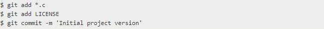

Получение репозитория Git
В этой главе рассматриваются все основные команды, необходимые для выполнения подавляющего большинства вещей, которые вы в конечном итоге потратите на Git. К концу главы вы должны быть в состоянии настроить и инициализировать репозиторий, начать и остановить отслеживание файлов, а также этапировать и фиксировать изменения.
Получение репозитория Git
Обычно вы получаете репозиторий Git одним из двух способов:
- Вы можете взять локальный каталог, который в настоящее время не находится под контролем версий, и превратить его в репозиторий Git, или
- Вы можете клонировать существующий репозиторий Git из другого места.
Инициализация репозитория в существующем каталоге
Если у вас есть каталог проекта, который в настоящее время не находится под контролем версий, и вы хотите начать управлять им с помощью Git, вам сначала нужно перейти в каталог этого проекта. Если вы никогда этого не делали, это выглядит немного по-другому в зависимости от того, какая система у вас работает:
для Windows: $ cd C:/Users/user/my_project и тип: $ git init
Это создает новый подкаталог с именем.git, который содержит все необходимые файлы репозитория — скелет репозитория Git. На данный момент в вашем проекте еще ничего не отслеживается. Дополнительные сведения о том, какие именно файлы содержатся в .gitтолько что созданном каталоге.
Если вы хотите начать управление версиями существующих файлов (в отличие от пустого каталога), вам, вероятно, следует начать отслеживать эти файлы и сделать начальную фиксацию. Вы можете сделать это с помощью нескольких git addкоманд, которые указывают файлы, которые вы хотите отслеживать, а затем git commit:
Клонирование существующего репозитория
Если вы хотите получить копию существующего репозитория Git — например, проект, в который вы хотели бы внести свой вклад, — вам нужна команда git clone. Если вы знакомы с другими VCSS, такими как Subversion, вы заметите, что команда "clone", а не "checkout". Это важное различие — вместо того, чтобы получить только рабочую копию, Git получает полную копию почти всех данных, которые есть на сервере. Каждая версия каждого файла для истории проекта по умолчанию удаляется при запуске git clone На самом деле, если ваш серверный диск поврежден, вы часто можете использовать почти любой из клонов на любом клиенте, чтобы вернуть сервер в то состояние, в котором он был при клонировании (вы можете потерять некоторые серверные крючки и тому подобное, но все версионные данные будут там.
Вы клонируете репозиторий с git clone <url>помощью . Например, если вы хотите клонировать вызванную библиотеку Git linkable libgit2, вы можете сделать это следующим образом:
$ git clone https://github.com/libgit2/libgit2
Это создает каталог с именем libgit2, инициализирует .git каталог внутри него, извлекает все данные для этого хранилища и проверяет рабочую копию последней версии. Если вы перейдете в новый libgit2каталог, который только что был создан, вы увидите там файлы проекта, готовые к работе или использованию.
Если вы хотите клонировать репозиторий в каталог с другим именем libgit2, вы можете указать новое имя каталога в качестве дополнительного аргумента:
$ git clone https://github.com/libgit2/libgit2 mylibgit
Эта команда делает то же самое, что и предыдущая, но вызывается целевой каталог mylibgit.
Прошлый урок